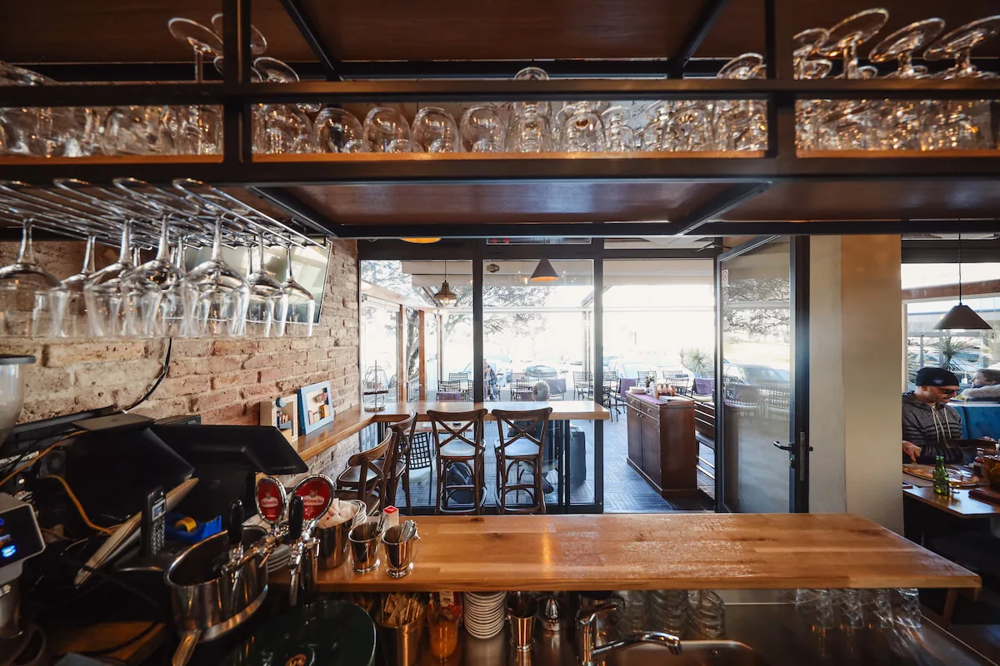
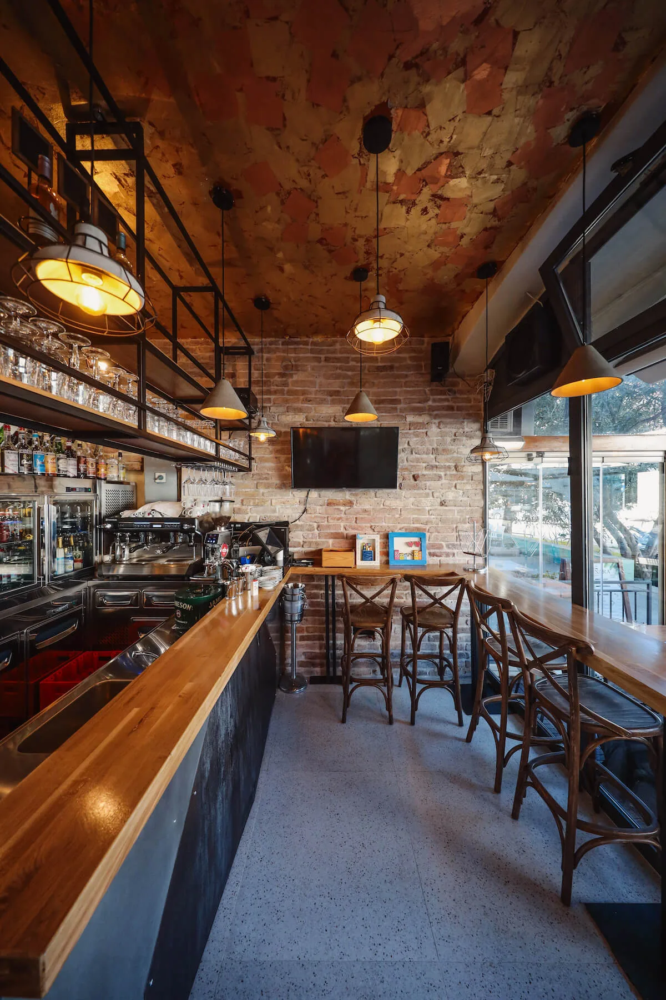
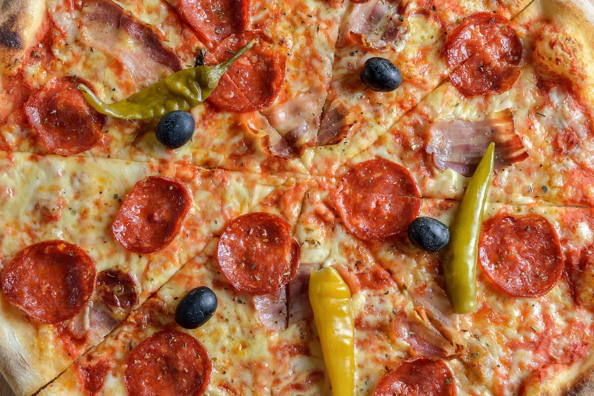
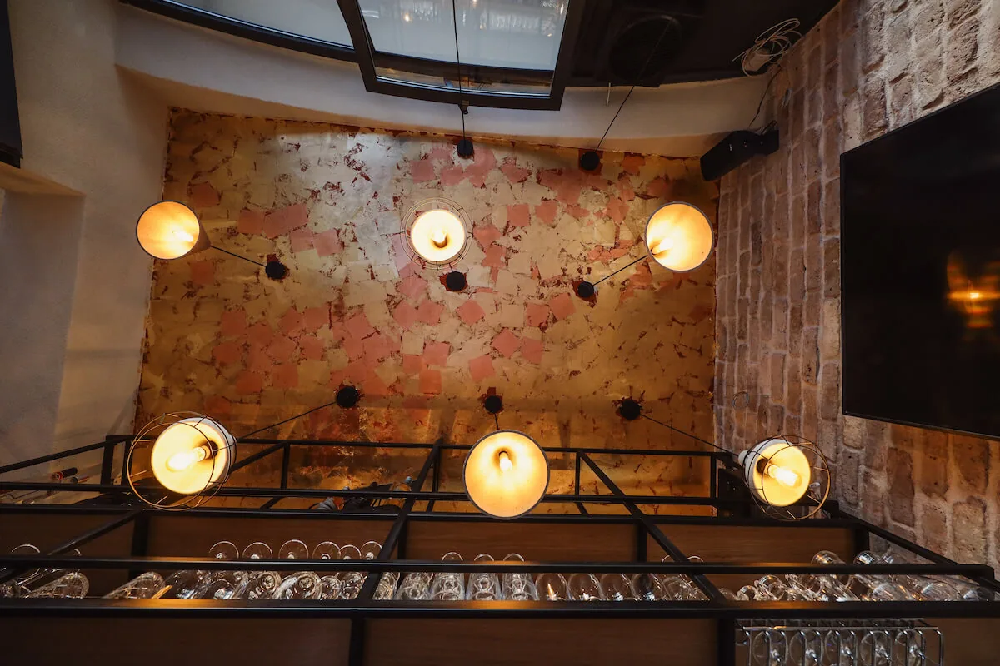

Zadar · Kampo Kaštelo · Od 1976.
Najstarija pizzeria
u gradu.
Malena, obiteljski vođena pizzeria u Kampo Kaštelu, povijesnom dijelu zadarskog poluotoka. Otvoreni 1976. kao prva pizzeria u gradu — i sve ove godine vodi nas ista obitelj.
O nama
Tanko tijesto, kvalitetni sastojci i skoro 50 godina na istom mjestu.
Malena smo i obiteljski vođena pizzeria s jako dugom tradicijom. Skoro 50 godina nalazimo se u srcu grada i svoju rustikalnu privlačnost održavamo sočnim pizzama na bazi tankog tijesta i kvalitetnih sastojaka s mnogo mediteranskog utjecaja. Otvoreni smo davne 1976. godine kao prva pizzeria u gradu i još smo uvijek ozbiljni u namjeri da vas razmazimo odličnom pizzom.
Tri bunara
Tri stvari koje nas drže
Kao tri bunarske krune na trgu nekoliko koraka od nas, i mi se držimo tri stvari.
Tanko tijesto
Sočne pizze na bazi tankog tijesta i kvalitetnih sastojaka, s mnogo mediteranskog utjecaja. Na jelovniku ih je 24.
Ista obitelj
Otvoreni 1976. kao prva pizzeria u gradu. Sve ove godine vodi nas ista obitelj.
Terasa
Terasa s 40 mjesta u Kampo Kaštelu. Ljeti je najbolja za vruće dane i večeri.

Pizza iz kalupa, kao prije 30 godina
Uz 24 klasične pizze na jelovniku držimo i pizzu iz kalupa, rustikalnu, rađenu na isti način kao prije trideset godina. Uz to kuhamo lazanje, slažemo salate i predjela od pršuta i sireva.
Lokacija
Kampo Kaštelo, na vrhu poluotoka
Nalazimo se u Ulici Jurja Bijankinija 8c, u Kampo Kaštelu: povijesnom dijelu Zadra na sjevernom vrhu staroga poluotoka. Ime tog prostora dolazi od mletačkog kaštela koji je ovdje stajao, a ispred kojega je nekoć bio obrambeni jarak.
Nekoliko koraka od nas je Trg tri bunara. Na mjestu zasutog jarka oko 1570. sagrađena je cisterna s tri bunarske krune i po njima je cijeli prostor dobio ime. Bunarske krune koje danas stoje na trgu barokne su i potječu iz 1751. godine.
Do nas se dolazi pješice, kroz staru gradsku jezgru. Otvoreni smo od 8:30 radnim danom, pa svratite i na jutarnju kavu, ne samo na pizzu.
„Još smo uvijek ozbiljni u namjeri da vas razmazimo odličnom pizzom!”
Galerija
Cigla, čelik i topla svjetla






Česta pitanja
Sve što gosti pitaju
Kada je Pizzeria Tri Bunara otvorena?
Radnim danom, od ponedjeljka do petka, otvoreni smo od 08:30 do 23:00. Subotom i nedjeljom radimo od 12:00 do 23:00. Isto radno vrijeme vrijedi kroz cijelu godinu.
Gdje se nalazi Pizzeria Tri Bunara?
U Ulici Jurja Bijankinija 8c, 23000 Zadar. To je Kampo Kaštelo, povijesni dio staroga grada na sjevernom vrhu zadarskog poluotoka, nekoliko koraka od Trga tri bunara. Dolazi se pješice kroz staru jezgru.
Kako naručiti ili provjeriti ima li mjesta?
Nazovite nas na +385 23 250 390. Možete nam pisati i na tri.bunara@gmail.com.
Imate li terasu?
Da, imamo terasu s 40 mjesta. Ljeti je najbolji izbor za vruće dane i večeri.
Koliko košta pizza?
Pizze su od 10,50 € do 15,50 €. Margherita počinje od 10,50 €, a pizza Tri bunara s pršutom i rikolom stoji 15,50 €. Svaki dodatak je 2,50 €.
Imate li vegetarijanska jela?
Da. Na jelovniku su pizza Vegetariana (14,50 €), pizza s tikvicama i gorgonzolom (13,70 €), Quatro formaggio (14,00 €), Caprese salata (11,00 €) i još nekoliko salata bez mesa.
Primate li kartice?
Da, primamo Visa i Mastercard kartice, kao i gotovinu.
Od kada postojite?
Otvoreni smo 1976. godine kao prva pizzeria u gradu. Sve ove godine vodi nas ista obitelj.
Služite li kavu i doručak?
Radnim danom otvaramo već u 8:30 i toči se kava od jutra. Espresso je 1,90 €, cappuccino 2,40 €.
Što još imate osim pizze?
Lazanje s mesom (14,90 €), predjela od pršuta i sireva, šest salata i deserte (cannoli, torta od sira). Pizze su na bazi tankog tijesta, s mnogo mediteranskog utjecaja.
Posjeta